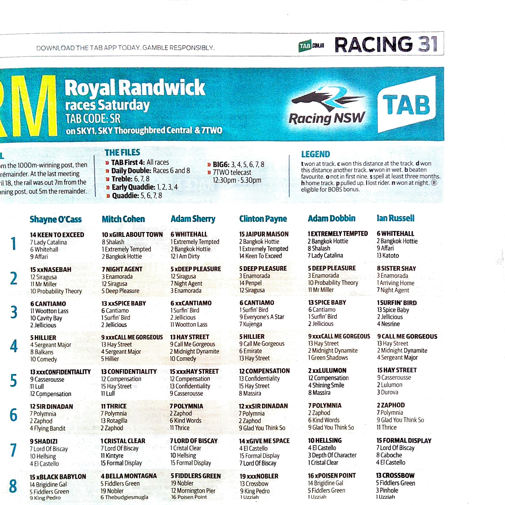

Every fix we've shipped has been a patch on the same architecture.
Every new publication breaks it differently.
your bug historyjan 2026 · apr 2026
A pattern, not isolated incidents.
23 Jan
Activate Studios hand TipAnalyser support over to me. Standing
Friday call begins.
06 MarPhantom horses. "Race 1 has a
thousand horses in it" — pipeline ingesting non-tip rows.
14 MarCross-race contamination. "Double-ups
again — horses added into races that aren't there."
16 Mar
Patch shipped. Root cause: Gemini was returning race
numbers as the strings "0" and "11".
21 Mar
I ask for your inputs/outputs to validate. You send them.
24 Apr
You return from the States. Test again. Same class of
bug. "xxx prefix" duplicates "Call Me Geregeous".
Four bug classes — phantom horses, cross-race contamination, race
numbers as strings, prefix-bleed duplicates — all from the same root
cause.
your words24 apr 2026 · 12:53 pm
"Just tested a race with the tip data that adds the xxx in front of
the horses name. It doesn't show in the preview to advise the AI.
If you look at race 4 it is a prime example. The horse name is
Call Me Geregeous also shows as
xxxxCall Me Gergegeous."
One image. Two horses where there should be one. The pipeline can't
tell publication markup from a horse name.
the image you sent metab racing 31 · royal randwick · sr

pete‑24apr‑xxprefix.jpg · 596 KB
what you saw
Race 4 returned two "Call Me
Gorgeous" entries — one correct, one prefixed with "xxxx".
where the bug actually lives
The publication uses an "xx"/"xxx"
prefix as bold/highlight markup for top picks.
Gemini's deterministic OCR can't tell that markup is markup.
It treats every glyph as part of the horse name.
Row five from the top:
Mitch Cohen R4 · 9 xxxCALL ME GORGEOUS — xxx prefix stripped → Call
Me Gorgeous.
Your reported bug, named in the agent's own words, in the same UI
that showed it. Not patched. Stripped at the architectural level —
and the strip is logged so you can audit it.
end-to-end · same imageclaude sonnet 4.6 · agentic loop
What it actually delivers.
8
races extracted
6
tipsters detected
192
selections
15
artefacts stripped
110s
end-to-end
$0.15
per extraction
0
phantom horses
✓
flagged race 8 cutoff
The agent also caught what you didn't ask it to: race 8 was
partially cut off in the source image, and rather than guess the
missing 4th picks, it flagged uncertainty. That's the
"honest failure" mode — when v0 would silently corrupt, v2 says "I
don't know about this part."
act 3 / four
The architecture beneath.
Same upload UX you have today. Different mind underneath.
Stateful. Provider-agnostic. Reasoning is a first-class output.
Provider-agnostic matters: when Gemini changes, you patch. When
Claude changes, swap models in 5 lines. Or run both in parallel and
keep whichever wins.
migration · not rewriteyour customers don't notice the swap
Same UX. New brain.
what stays
Your domain. Your brand.
The upload UX your users know.
Every feature they've come to rely on.
Your existing customer relationships.
what changes
The OCR pipeline becomes an agent.
Stateless becomes persistent (Convex).
Provider-locked becomes provider-agnostic.
Silent corruption becomes honest failure.
Each extraction compounds into intelligence.
We don't ask your users to migrate. We migrate the engine
underneath them.
act 4 / four
What this unlocks.
Once each extraction stops evaporating and starts
compounding, you stop being a tip
extractor. You become an intelligence platform.
the asset you've been throwing awaystateless → stateful
Memory is the moat.
today
Every extraction starts blind. Past Tony Brassel doesn't help
future Tony Brassel.
You own a verified-accuracy
dataset nobody else has. Every Saturday makes it
stronger.
$32B Australian wagering market. Three
bookies extract the punters' intelligence and keep the spread. The
asset you accumulate by aggregating tipster picks against ground
truth — that's the wedge. Nobody else has six months of clean
data.
the build ordersix steps · each unlocks the next
From extractor to platform.
01Agentic extraction · ship today (we have it)DONE
Each step ships independently. Each step has its own monetisable
value. We don't bet the farm on step six.
your customers · re-housedthree tiers · same audience
The same punters, three depths.
tier 1 · whatsapp
Free / freemium
Bot DM. Drop tip sheet → consensus picks back. Race results
auto-posted. Your existing punters land here.
tier 2 · matrix
Subscription
"The TipAnalyser" whitelabel app. Group intelligence,
leaderboard, prediction market. The community lives here.
tier 3 · premium
Protocol
Anonymous reputation. Conviction-weighted aggregation.
Cross-meeting intelligence API. The defensible moat.
Your existing customer base seeds tier 1 within a day. Tier 2
converts the most engaged 10–20%. Tier 3 funds the platform.
what's already built3 commits · 1 day · ready to demo
This isn't a deck. It's a working stack.
code, today
packages/agent — agentic extraction loop, 9 tools
packages/convex — schema deployed, mutations live
packages/web — streaming UI you just saw
packages/matrix-bot — bot wiring, ready when needed
packages/shared — domain logic + tests
infrastructure, today
Convex Cloud · production schema deployed
Anthropic Sonnet 4.6 · prompt caching on
Matrix homeserver · subfrac.cloud · running
Cloudflare Pages · ready for production deploy
Repo · monorepo · TypeScript end to end
Steps 1 & 2 of the build order — done. Steps 3 & 4 — clear path,
scaffolded already. Steps 5 & 6 — the Conviction Game vision lives in a separate deck I'll send you if you want to go deeper.
conversation
Where to from here?
option a · cut over
v2 replaces v0 inside thetipanalyser.com. I take ownership of
the engine. You stay the brand and audience. We ship steps 3-4
in a month.
option b · partner
We co-build TTA Cloud (Matrix surface) on top of the v2 engine.
Equity / revenue split TBD. Long horizon.
option c · keep talking
You take this in, think on it, send me your bug list and your
customer numbers. I send you a scope-and-cost. We meet again in
two weeks.
I'd rather build the right thing with you than the wrong thing for
you. Tell me what shape this needs to take.